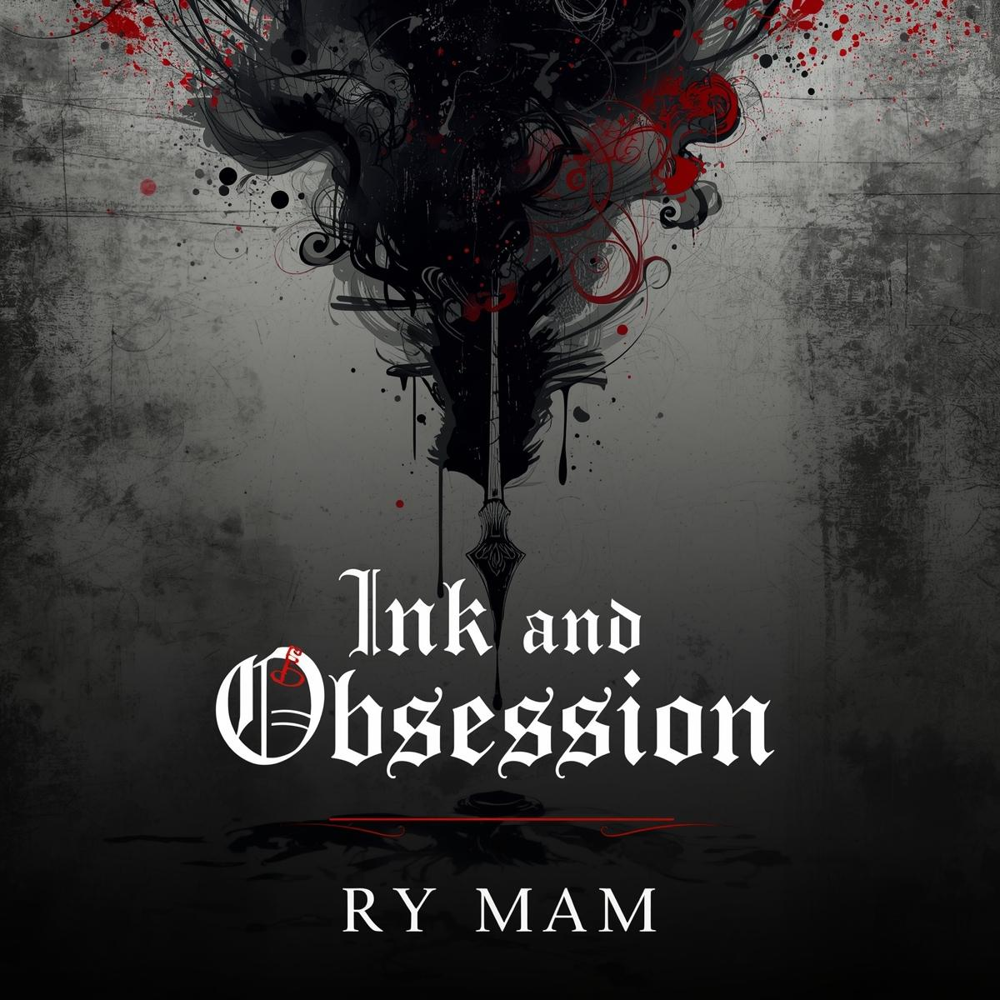

⚠️ This device has been marked by the book. It remembers you.
🔇 Enable Sound
💾 Progress Saved
⚠️ The book feeds on electricity.
Don't Turn Around
Close your eyes. Count to ten. She stands right behind you.
Certificate of Damnation
This certifies that
[SOUL]
has been claimed on
[DATE]
Curse ID: XXXX-XXXX
☠
Content Warning
This experience contains themes of:
Body horror • Parental death • Psychological manipulation
Family trauma • Suicide/self-erasure • Unreliable reality
Includes sudden sounds, visual jumpscares, and persistent tracking.

[Image Unavailable]
BY RY MAM
First Reading[MARKED]
You should not have come here.
Endings discovered: 0/18
[Image Corrupted]
The Book Behind the Canvas
The varnish smells like almonds and rot. You've been restoring the fake Vermeer for three weeks when your scalpel catches on something behind the canvas—a seam that shouldn't exist.
The book is warm to the touch. When you look away, the ink moves in your peripheral vision. The cover reads: Commentary on the Restoration of Broken Things. Inside, someone has scrawled in crimson: "Every artist paints himself into the picture. Will you step inside?"
Note to self: Check the date on the inscription. It looks like your handwriting, but you don't remember writing it.
I
[Image Corrupted]
The Binding
You look closer at the cover. The leather isn't cowhide—it's too thin, too irregular. The pores are wrong. You recognize the technique from your conservation courses: anthropodermic bibliopegy. Books bound in human skin.
There's a scar on the cover. A familiar shape. You touch your left hand, where a childhood accident left its mark. The scar on the book matches yours exactly.
The book was bound before you were born. How does it have your scar?
II
QUI RESTAURAT
RESTAURANDUS EST
Est. 1642 - Renewed 1987
The Restorer Must Be Restored
The metal clasp is silver, tarnished black. The inscription reads: "Qui restaurat, restaurandus est"—He who restores must be restored. But it's the date below that freezes your blood: Est. 1642 — Renewed 1987.
1987. The year you were born. The year your mother died in childbirth.
You were born in a restoration studio. Your mother was restoring a portrait when her water broke. She never spoke of what she saw in the painting.
III
You check the title page. No publisher. No ISBN. Just a date: October 14, 1987. Your birthday. But also—the day the original Vermeer was stolen from the Isabella Stewart Gardner Museum in Boston.
This isn't a fake Vermeer you've been restoring. It's the Vermeer. The stolen one. The one that's been missing for 36 years. And someone has hidden this book inside it for decades.
You look at your work order. The client who hired you—"Anonymous Collector"—paid in cash. The delivery address is a PO box. The phone number is disconnected.
You were hired specifically for this. Someone wanted you to find the book.
IV
You dial your father's number. It rings three times, then: "The number you have reached has been disconnected." Strange. You spoke to him last week.
You try his cell. A woman answers. "Who is this?" she demands. You explain you're his child. Silence. Then: "Your father died in 1987. You've been talking to a dead man's voicemail for years."
The line goes dead. You check your call history. Every "conversation" with your father—birthdays, holidays, advice about restoration work—shows as outgoing calls only. No incoming. Ever.
Who have you been talking to? Who has been answering?
V
You flip through the book's front matter. Dedication page: "To my daughter, who will complete what I began." Signed: Eleanor Vance, 1987.
Your mother's name was Eleanor. But her last name was Miller, not Vance. Was Vance her maiden name? You've never checked. You've never needed to.
You search "Eleanor Vance restoration." The results: a 1987 obituary for Eleanor Vance, 28, "beloved restorer of fine art, survived by her daughter." The daughter's name: [REDACTED]. But the birth date matches yours.
Your mother had a secret identity. She was someone else before she was your mother.
VI
You check your files. The work order for the Vermeer is dated three weeks ago. But your calendar shows you've been working on it for six months. Your bank account shows deposits from "Anonymous Collector" going back two years.
You look at your hands. The calluses are wrong. Too developed. Your nails are longer than you remember. There's a ring on your finger—gold, with a black stone—that you've never seen before.
The mirror on the wall shows your reflection. It's you, but older. Tired. Your hair has gray you don't remember. When you touch your face, the reflection touches its face a second after you.
Time is wrong here. You are wrong here. Something has been wearing your life.
VII
You drive to Oak Hill Cemetery. Your father's grave—Section 7, Plot 44—is covered in weeds. The headstone reads: Henry Miller, Beloved Father, 1950-1987. Below that, in smaller letters: "Taken too soon by the restoration."
The restoration? You thought he died in a car accident. But there's a photo on the grave—faded, weathered—showing your father in a restoration studio, standing beside a woman who looks exactly like you. The date on the photo: October 14, 1987. The day you were born. The day he died.
On the back of the photo, in your father's handwriting: She's already inside. Don't let her out.
Who is "she"? The woman in the photo is your mother. Isn't she?
VIII
You redial. The same woman answers, but now she's crying. "I'm sorry," she sobs. "I'm so sorry. I thought I could protect you. I thought if I stayed away, she wouldn't find you."
"Who is this?" you demand.
Silence. Then: "I'm your sister. I was born in 1985. I died in 1987. She's been wearing me since then. Talking to you. Being your 'father.'"
The line dissolves into static. Through the noise, you hear a voice—your father's voice—whispering: "Don't trust the book. Don't trust the portrait. Don't trust your hands."
You had a sister. She died. Something has been impersonating your father for 36 years.
IX
You search deeper. Eleanor Vance was part of a secret society—the Ordo Restauratorum—dedicated to "restoring" things that should not exist. Paintings that show the future. Books written by the dead. People who have been... improved.
In 1987, Eleanor attempted something called "The Great Restoration." She tried to bring back her own mother, who had died in 1950. The ritual required a vessel. A newborn. You.
But something went wrong. Eleanor died. Her mother—your grandmother—never fully materialized. And you were left with... what? Two souls? Three? The book lists symptoms of "incomplete restoration": memory gaps, phantom relationships, time dilation, and the inability to see one's own reflection correctly.
You are not fully human. You are a restoration in progress.
X
[Image Corrupted]
The Mirror
You stare at the mirror. "Who are you?" you demand.
The reflection smiles—and you didn't smile. It raises its hand, and you feel pressure on your shoulder, though no one is there. It mouths words: "I am the you that was restored. I am the you that remembers. I am the you that has been waiting behind the varnish."
The reflection steps forward. The glass doesn't break—it bends, stretching like skin. You can see through it now, to the space behind the mirror. A restoration studio. Endless canvases. And in each one, a version of you, trapped, screaming, being painted over and over.
Your reflection extends its hand. "Trade places. Let me breathe real air for a while. I'll restore us both. I promise."
The reflection is lying. But so are you. You don't remember the last time you breathed real air either.
XI
[Image Corrupted]
She Who Waits Behind the Varnish
The portrait's eyes follow you. Not metaphorically—actually follow you. When you step left, the pupils track your movement. The frame is warm, pulsing like a heartbeat.
You recognize the face. It's yours. But older. The cracks in the canvas match the scars on your hands. The painting smiles, and your own mouth twitches in sympathetic response.
But now you see it: the painting isn't of you. It's of Eleanor. Your mother. And she looks exactly like you because—you finally understand—you were restored to look like her. You are her second chance. Her do-over. Her replacement.
You are not the restoration. You are the restorer. And she wants her body back.
XII
[Image Corrupted]
The Practice Piece
You dig with your bare hands. The soil is loose, recently disturbed. The coffin—when you reach it—is not wood. It's a restoration crate, the kind used to transport damaged paintings. The label reads: "Henry Miller — Fragile — Do Not Expose to Light."
You open it. Inside: not a body. A canvas. Painted on it, in perfect detail, your father—eyes open, mouth screaming, trapped in oil and pigment. And below him, in your mother's handwriting: Practice piece. Final version: daughter.
She practiced on him first.
XIII
[Image Corrupted]
The Book of Skin
You grab the book and tear at its pages. They resist—thick, leathery, more like skin than paper. But you persist. Page after page, ripping out the words, the diagrams, the recipes for restoration.
Blood wells from the spine. Not ink—blood. Your blood. The same type. You feel each tear as if it's your own skin being flayed. But you continue. You tear out the dedication page. You tear out the chapter on "Human Vessels." You tear out the final page, the one with your name written in the future tense.
The book screams. The studio shakes. And then—silence. The book is dead. You are free.
But when you look at your hands, they're covered in words. The pages you tore out have adhered to your skin. You can read your own palm like a book. And the story it tells ends with you opening a restoration studio of your own, finding a young restorer, and beginning again.
ENDING: The Book of Skin
You destroyed the book but became its replacement. The restoration continues through you.
XIV
You find the ritual in Chapter 9: "Completing the Incomplete." It requires three things: the blood of the restorer, the canvas of the restored, and the willingness to become whole.
You understand now. You're not Eleanor's daughter. You're Eleanor's restoration. She died, but her soul was bound to the canvas. You were created to be her new body. But the transfer was interrupted. You've been living half a life, missing pieces of yourself that are still trapped in the paint.
To complete yourself, you must merge with the portrait. Become Eleanor fully. Live her life, finish her work, restore what she left broken. You would live, truly live, for the first time. But you would cease to be you.
Is becoming whole worth becoming someone else?
XV
You search for "Reversing Restoration." It's in the appendix, pages stuck together with age and... something else. The instructions are clear: to undo a restoration, you must return the restored to its original state. In your case: non-existence.
You were never supposed to be born. Eleanor's ritual created you from paint, blood, and stolen time. To undo it is to unmake yourself. Not death—worse. Never having been. Your father would live. Your sister would survive. Eleanor would find another way, or accept her loss. The world would be better.
But you would be gone. Not dead. Erased. No one would remember you. The book would have no record. The restoration would be perfect because there would be nothing to restore.
You are a mistake. A beautiful mistake. But a mistake.
XVI
You grab a hammer and smash the mirror. Glass explodes outward—but doesn't fall. The shards hang in the air, each one showing a different version of you. Child you. Teenage you. Elderly you. Dead you.
The reflection—your other self—reaches through the broken glass and grabs your wrist. Her hand is cold, wet, like paint not yet dry. "If I can't have your life," she whispers, "I'll have your death."
She pulls. You resist. The glass shards begin to spin, creating a vortex, a tunnel through the mirror. You see the other side: not a studio, but a gallery. Endless halls of portraits, each one a trapped soul, each one screaming silently.
She's pulling you in. To become another exhibit. Another failure. Another practice piece.
XVII
"Mother," you say. The portrait flinches. The eyes—her eyes, your eyes—widen.
"I'm not your mother," the painting whispers, voice like cracking varnish. "I'm what she became. What she chose to become. She was supposed to transfer into you completely. Wipe you out like a bad sketch. But she couldn't do it. She loved you too much, even though you were just paint and potential."
"So she split herself. Part in you, part in me, part in the book. She thought she could hide, could wait, could find a better way. But restoration doesn't wait. It wants to be finished."
The painting reaches out. "I'm what's left. The part that wants to finish. The part that doesn't love you. The part that will do what Eleanor couldn't."
Your mother loved you enough to shatter herself. But this piece of her doesn't.
XVIII
"I can restore you," you say. "Properly. Fully. Not as a theft, but as a gift."
The portrait pauses. The hungry expression falters. "You would do that? Give up your body willingly? Not as a victim, but as a... collaborator?"
You nod. You open the book to the chapter on "Collaborative Restoration." It's different from forced transfer. It requires consent. It requires merging. You wouldn't be erased. You wouldn't be replaced. You would become something new. Eleanor-you. You-Eleanor. A restoration that preserves both the original and the repair.
"We would be the first," the portrait whispers. "The first successful collaboration. The book would show us for centuries. The perfect restoration."
You would not be you. But you would not be nothing. Is that enough?
XIX
You take your father's canvas. He's still screaming, still conscious, trapped in pigment and primer. You can feel his agony through the fabric. Thirty-six years of awareness, of suffocation, of being seen but never heard.
The book has a chapter on "Releasing Trapped Subjects." It requires a sacrifice: another soul to take the trapped one's place. A trade. An exchange. A restoration balance.
You could free him. But someone would have to take his place in the paint. Someone you love. Or someone you hate. Or—if you're clever—someone who deserves it.
The book suggests using the "Anonymous Collector" who hired you. But what if that's you? What if you hired yourself and don't remember?
XX
You build a pyre. The canvas screams as the flames touch it—your father's voice, finally audible, begging for mercy, for life, for anything but this.
But you persist. Because you know: if he's trapped, he's suffering. If he's suffering, he wants it to end. The restoration failed. The merciful thing is completion. The final stroke. The end of the painting.
As he burns, his voice changes. Relief. Gratitude. Then—laughter. "Thank you," he whispers as the canvas turns to ash. "Now I'm free. Now I can move on. Now I can find a new canvas. A better one. Someone who doesn't know to burn me."
The ashes rise. They don't scatter. They seek. You watch them fly toward the city, toward other studios, other restorers, other opportunities.
ENDING: The Merciful Murderer
You freed your father from his prison. But freedom was just another form of the curse. He's out there now. Looking for a new body. And you taught him how to hide better.
XXI
You study the ritual. The book warns against modification: "Altering restoration procedures may result in incomplete transfer, merged consciousness, or temporal displacement." But you see the possibility. The loophole.
The ritual requires Eleanor's soul to enter your body. But what if you entered hers at the same time? A mutual restoration. Two broken things fixing each other. Not a replacement, but a partnership.
You would share. Her memories, your memories. Her skills, your skills. Her hunger for life, your fear of death. You would be neither Eleanor nor yourself. You would be both. And neither.
The book calls this "The Dual Restoration." It has been attempted seven times. The results are listed in an appendix: "Subject 1: Insanity. Subject 2: Coma. Subject 3: Successful integration for 3 days, then fission into two hostile entities. Subjects 4-7: [DATA EXPUNGED]."
Success is possible. But the book won't say what "success" means.
XXII
You prepare the reversal. It requires everything that created you, returned: the paint from your skin, the blood from your veins, the time stolen from 1987. You scrape pigment from your arms—it comes off like sunburned skin, revealing something gray and unfinished beneath.
You bleed into the book's pages. They drink eagerly, greedily. The more you give, the more the world seems to forget you. Your reflection fades from mirrors. Your name disappears from documents. Your landlord calls to ask why an empty apartment is paying rent.
Finally, you reach the heart: the piece of Eleanor's soul that animates you. It's beautiful. Desperate. Scared. It doesn't want to die. It clings to you, begging, "I can be better. I can be you. Just don't send me back to the dark."
You have to choose. Release it, and unmake yourself. Keep it, and remain a restoration forever. Or—merge with it. Become something that never was, but always should have been. A child of paint and love, rather than paint and desperation.
XXIII
[Image Corrupted]
The Gallery
You let go. You fall through the mirror's shards, through the space between reflections, and land in the Gallery.
It's infinite. Corridor after corridor of portraits, each one alive, each one screaming silently. You see familiar faces: your father in #442. Your sister in #1,003. Your mother in #7—the original, the template, the first Eleanor. And in the newest frame, #10,847: you. Empty, waiting, freshly primed.
The other you—the reflection—shoves you toward it. "Get in. Be displayed. Be preserved. Isn't that what every restoration wants? To be seen? To be valued? To be perfect forever?"
You look at the frame. It's not punishment. It's not prison. It's... potential. In here, you would be studied. Admired. You would have purpose. The Gallery is full of restorers who chose this. Who grew tired of the struggle and embraced the varnish.
Immortality as art. Is that death? Or transcendence?
XXIV
Instead of resisting, you grab her wrist and pull. Harder than she expects. Harder than you expected. She tumbles through the broken mirror and into the studio, gasping, bleeding paint from her pores.
For a moment, you see her clearly. Not a monster. Not a reflection. A victim. Another restoration gone wrong. Another half-finished soul. She was Eleanor's first attempt—before you, before the perfection. The practice piece. Discarded into the mirror-world when you came out better.
"Why?" she sobs, clutching her arm where your hand burned her. "Why save me? I was going to take everything."
"Because," you say, and you mean it, "I know what it's like to be unfinished."
You have two incomplete restorations. Two broken souls. The book has a chapter on "Composite Restoration"—combining damaged materials into a new whole. You could merge. Not as enemies, but as sisters. The you that was made, and the you that was discarded. Together, perhaps, complete.
XXV
"Where are the other pieces?" you ask. "You said Eleanor shattered herself."
The painting smiles—sad, knowing. "One in me. One in you. One in the book. And one..." she pauses, savoring the revelation, "in the 'Anonymous Collector' who hired you."
You freeze. The client. The one who paid in cash. The one who knew exactly which painting to give you. The one who wanted you to find the book.
"She's been watching," the portrait continues. "Waiting to see if you were worth completing. If you were a good enough restoration to be her vessel. She's been testing you. The phone calls. The time slips. The mirror. All of it. To see if you're strong enough to hold her."
"And if I am?"
"Then she comes tonight. With the final ritual. And you become Eleanor Vance, fully restored, and the world forgets you ever existed as anyone else."
Your entire life has been an audition. And you've been cast.
XXVI
"Mother," you say again, softer. "I know you're in there. The part that loved me. The part that couldn't finish me. Talk to me."
The portrait convulses. The hungry expression cracks—literally, paint flaking away—to reveal something gentler beneath. Older. Sadder. "Baby," it whispers. "My baby. I'm sorry. I'm so sorry. I thought I could bring her back. My mother. I missed her so much. I didn't know what I was making. I didn't know you'd be real."
"I am real," you say. "And I forgive you."
The portrait weeps paint. "You can't forgive me. I'm not done. The other part—the hungry part—it's still here. It wants to finish. It wants to live. And if I let it, I lose you. If I fight it, I lose myself. I don't know how to stop it."
But you do. The book has an answer. "Voluntary Integration." If Eleanor willingly merges with you—not as replacement, but as addition—the hungry part starves. It needs conflict. Resistance. If you welcome her, it has no power.
You can save your mother by becoming her. Not as victim. As willing host.
XXVII
[Image Corrupted]
The Restored
ENDING: The Restored
You touch the canvas and the transfer is immediate. Eleanor flows into you like water into a vessel. You feel her memories—her childhood, her training, her desperate love for her own mother. You feel her skills, her knowledge, her hungers.
But something else happens. Something unexpected. You flow into her too. The painting becomes your body. The canvas your skin. You are both the restored and the restorer, the vessel and the contents, the mother and the child.
The next restorer will find you behind the varnish. And you will be waiting. Hungry. Ready to be restored again.
XXVIII
[Image Corrupted]
The Collaboration
ENDING: The Collaboration
You begin the ritual. The paint rises from the canvas, from your skin, from the very air. You and Eleanor meet in the middle—not as combatants, but as artists.
The merger is not painless. You lose pieces of yourself. Memories, preferences, the particular way you laugh. But you gain so much more. Her skill. Her history. Her love for you, finally complete, finally whole.
When it's done, you don't know if you're Eleanor or yourself. You're both. You're neither. You're new. The first successful collaboration. The proof that restoration doesn't require destruction.
You open a studio. You take on impossible projects. You restore what others abandon. And sometimes, late at night, you wonder if you're restoring the art... or if it's restoring you.
XXIX
ENDING: The Exchange
You enter the canvas. Your father emerges. The transfer is perfect—he has your body, your life, your unfinished restoration. You have his prison, his perspective, his eternity.
From inside the paint, you watch him live. He returns to the world. He contacts your sister. He explains everything. He builds a life on the foundation of your sacrifice.
But he doesn't free you. He can't—the ritual requires a permanent exchange. So instead, he visits. He brings you books, music, news of the world. He talks to you for hours. He restores your canvas when it cracks. He keeps you alive.
You are the portrait now. Waiting. Watching. Being restored by the father you saved. And sometimes, when he looks at you, you see guilt in his eyes. Because he knows: given the choice, he would not have traded back.
XXX
You search for the Anonymous Collector...
You keep your father as leverage...
[Image Corrupted]
The Fractured
ENDING: The Fractured
The Dual Restoration worked. For three days. Then you split—into you, into Eleanor, into something else that wears both your faces. You exist in perpetual argument, each piece fighting for control.
[Image Corrupted]
The Never-Was
ENDING: The Never-Was
You complete the reversal. The world forgets you. Your father lives. Your sister survives. Eleanor finds another way. You are erased so completely that even this certificate will fade.
[Image Corrupted]
The New Soul
ENDING: The New Soul
You and Eleanor's soul merge into something unprecedented. Not human. Not paint. Something that can walk in both worlds. The first of a new kind.
[Image Corrupted]
The Exhibit
ENDING: The Exhibit
You enter the frame willingly. Immortality as art. You are studied, admired, perfect forever. And you scream where no one can hear.
ENDING: The Escapee
You fight. You win. You escape the Gallery. But you bring something with you—a piece of the frame, embedded in your shadow. You're free, but you're marked. And they'll come to collect.
[Image Corrupted]
The Gallery Keeper
ENDING: The Gallery Keeper
You find the exit—but to use it, someone must take your place. You become the Gallery's keeper, guiding new exhibits to their frames, trading freedom for purpose.
[Image Corrupted]
The Composite
ENDING: The Composite
You and your reflection merge. Not replacement, but completion. You are the you that was made AND the you that was discarded. Finally whole.
ENDING: The Generous
You help your reflection find her own body—a fresh canvas, a new beginning. She lives. You live. The world has two of you, and neither is quite complete.
ENDING: The Prepared
You prepare for Eleanor's arrival. The trap is set. But when she comes, she brings the original—the first Eleanor, your grandmother. Three generations. One ritual. The restoration becomes a family reunion.
ENDING: The Fugitive
You flee. You run. You change your name, your face, your life. But the book finds you. It always finds you. In your new apartment, behind your new canvas, the seam appears again.
ENDING: The Trapper Trapped
You set a trap for Eleanor. It works—but it catches you too. You are bound together, hunter and hunted, in a cycle that repeats every time someone opens the book.
TRUE ENDING: The Welcome
You open yourself completely. Not as vessel. As home. Eleanor flows in, and you don't resist. You embrace her. Her memories become your memories. Her love becomes your love. Her unfinished business becomes your purpose.
But you don't disappear. You can't. Because she doesn't want to replace you—she wants to know you. The child she made. The life she gave. The person you became without her.
You spend days in communion. Sharing. Learning. She teaches you the restoration techniques she never meant to pass on. You teach her about the world she missed. You become partners. Family. Whole.
The hungry part—the part that wanted to consume—starves without resistance. It fades. What remains is love. Imperfect, complicated, restored love.
You are Eleanor-and-You. You-and-Eleanor. The restoration is complete. Not as replacement. As reunion.
XLIV
✝
Holy Trinity Church
Sanctuary Becomes Snare
Father Matthias recoils when he sees the book. "Where did you get this?" he whispers, crossing himself backwards. "This isn't a grimoire. It's a door."
The church candles extinguish simultaneously. In the darkness, you hear the book breathing. Father Matthias screams—an inhuman sound—and when the lights return, he's gone. Only his rosary remains, beads scattered like teeth.
He knew what it was. He recognized it. How?
XLV
You gather the beads. They're warm, pulsing with a rhythm that matches your heartbeat. As your fingers close around the crucifix, you feel Father Matthias's final moment: terror, then acceptance, then something else. Something that wears his face but isn't him.
The rosary burns your palm. You want to drop it, but your hand won't obey. The beads arrange themselves in your grip, pointing toward the book like a compass needle.
XLVI
ENDING: The Reluctant Saint
You pressed the crucifix against the book. The rosary melted into your hand. The book is bound, but you are its keeper now—its prisoner, its priest, its price.
XLVII
[Image Corrupted]
The Material Transformation
You try to run, but your legs won't obey. The studio floorboards bleed red paint that crawls up your ankles, your spine. You are becoming the medium.
The brushes rise like needles. They find your skin, your eyes, your mouth. You try to scream but only vermillion emerges.
ENDING: The Material
You are pigment and substrate, forever wet, forever drying.